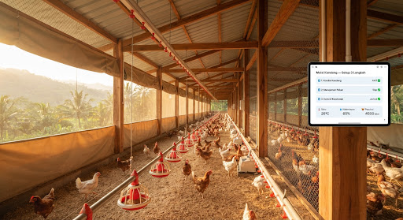

roofing
Kandang Baru
Mulai Kandang Baru
Siapkan kandang dan periode secara bertahap. Anda bisa berhenti dan melanjutkan kapan saja.
pets
1
Data Kandang
2
Recording
3
Periode
touch_app Persiapan kandang • Boleh dikerjakan urutan mana saja
home_work
Langkah 1: Identitas Kandang
Mulai dari tempat pencatatan usaha Anda
domain
warehouse
Dipilih, bukan ditebak
grid_view
Rincian Bangunan & Kapasitas
2 Bangunan
A
Bangunan A
Sisi Timur / Atas
ekor
B
Bangunan B
Sisi Barat / Bawah
ekor
calculate
Total Kapasitas Terhitung
7.000 ekor
Opsional
handshake
Opsional
edit_note
Langkah 2: Model Pencatatan
Tentukan cara tim Anda bekerja setiap hari
check
Recording Harian
Pakan dipakai, mati, afkir, dan sampling bobot bila dilakukan. Satu catatan bersama yang praktis diisi bersama Anak Buah Kandang (ABK).
groups
Dipakai bersama ABK
analytics
Rata-rata sampling otomatis
check
Tidak Aktif (Finansial Saja)
Tetap bisa mencatat belanja, uang kas, dan hasil periode tanpa recording harian.
account_balance_wallet
Fokus Keuangan
info
Fleksibel: Mode recording ini bisa diubah kapan saja di menu Pengaturan Periode.
event_upcoming
Langkah 3: Persiapan Periode
Sebelum DOC Datang ke kandang
Boleh dikosongkan
verified_user
Status Transparan & Aman
Periode 01 akan berstatus "Persiapan". Belum ada ayam atau umur yang dihitung sampai Anda mencatat DOC Masuk saat ayam benar-benar tiba di kandang.
help_center
Kandang sudah ada ayamnya?

Mulai Sederhana
Catat kandang, belanja, dan uang di satu tempat.
cloud_sync
Draf tersimpan di HP • Perlu sinyal untuk menyimpan pengaturan kandang